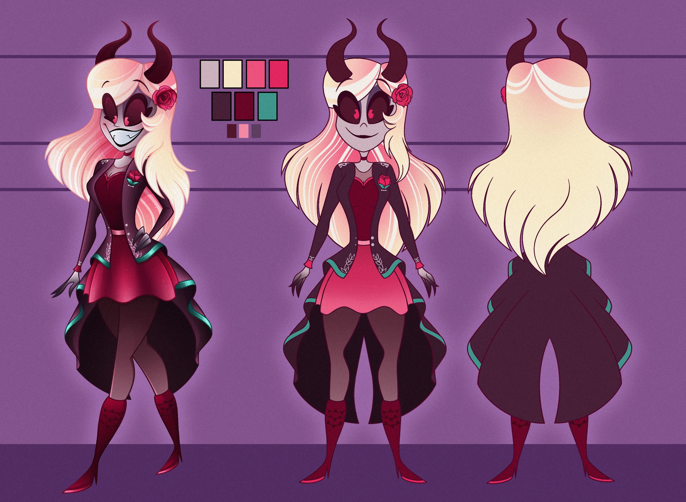
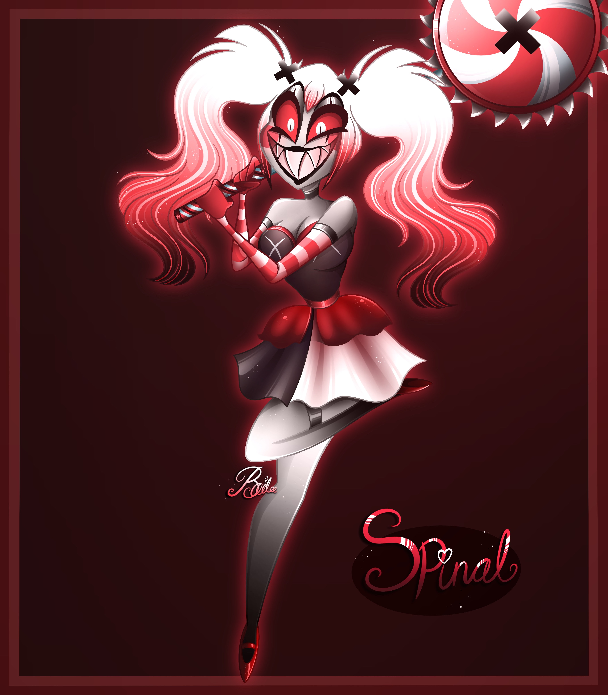

Aurora
Meet Aurora! She's my first ever fully designed OC that is also a persona of myself in a way. I was heavily inspired by Vivziepop's characters from her show 'Hazbin Hotel' and 'Helluvaboss.' I thought it would be a cool concept to have my own character in Vivziepop's world alongside with her characters. Aurora is a female demon from Hell, she has rose colour horns with mathcing eyes and bright pink irises to give her a more 'cute' look, blonde hair with some pink contrast and platinum highlights, pale skin with rosey cheeks, pearly white teeth with some fangs, purple coat with green ends, pink skirt and tight stockings on her legs, rose colour heels and to touch it all up with a single pink rose in her hair and coat.

Siren Mermaid design
This is a concept design of a siren mermaid that's currently nameless. I wanted to go with some sort of ghost transparent look by using a lot of white, possessive eyes and her hair having no gravity and always floating up as if it's underwater. Although I did want a ghost look I still wanted to add a little bit of colour and thats when I got the idea of using pastle colours to match with the white. I went with a rainbow pearl look because I've always loved the look of holographic colours but I didn't want the colours to be too bright and end up bleeding the look. So I took inspiration to a bubble, I made my siren's tail/fins transparent and adding the same 3 colours (pink, purple, blue) on her hair. Last minute I added some pearls since mermaids typically wear them as jewellery and I included some in her hair just to make it more detailed. Most importantly I didn't want my siren design to look friendly so I gave her claws and sharp teeth to make her more creepy and threatening but still kept her looking pretty.

Spinal
This is Spinal! She's a female clown demon that loves to cause trouble and brutally murder others. I took a lot of inspiration on a few characters such as 'Harley Quinn,' 'Velvet,' 'Pennywise' and 'Spinel.' I wanted to create some sort of clown circus themed character thats really chaotic and a complete psycho. However I've always wanted the colours to mainly be red black and white as that's traditionally used for clown like characters, I also like the idea of Spinal being a sweet tooth and loving sweets, so I added some peperment patterns on her weapon, candy cane swirls on her arms and including the spiral patterns in her hair. For some reason I wanted the character to have a random symbol to be repeated within her design which ended up being an 'X' I still to this day can't really explain why I went with it but I chose the X symbol as that ended up suiting her the best.
